Specification (draft)
Installation
Extract the downloaded ZIP and copy phn_output.py and phn_output.inx to the Inkscape extensions folder.
- Windows
C:\Program Files\Inkscape\share\inkscape\extensions- macOS
~/.config/inkscape/extensionsorContents/Resources/extensions
Exporting
In Inkscape, choose Save As, select Algodoo scene (*.phn) as the file type, and save the file.
To keep an editable SVG, also save a copy as Inkscape SVG (*.svg).
SVG to Algodoo reference
Jump to an item
| Item | SVG | Algodoo | Conversion notes |
|---|---|---|---|
| Scale | 1 inch (in) | 1 meter (m) | One inch in Inkscape corresponds to one meter in Algodoo. For a drawing with the scale already set up, start with a copy of example.svg. Toggle the grid with View → Grid (#). |
| Circle | 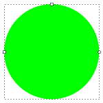 |
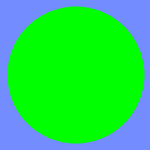 |
A circle drawn in Inkscape becomes a circle in Algodoo with the “Draw circle cake” option off. A circular path drawn in another SVG editor may be treated as a polygon. |
| Ellipse | 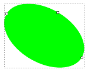 |
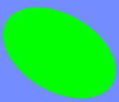 |
An ellipse becomes a polygon. |
| Rectangle | 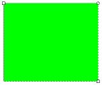 |
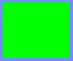 |
A rectangle drawn with the rectangle tool becomes a box. |
| Rounded rectangle | 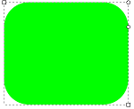 |
A rectangle with rounded corners becomes a polygon. | |
| Star | 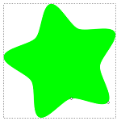 |
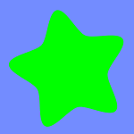 |
A star becomes a polygon. |
| Complex star | 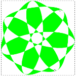 |
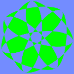 |
Complex shapes drawn with the star tool also become polygons. |
| Spiral | 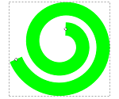 |
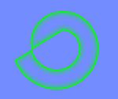 |
Exporting a spiral directly may give an unexpected shape, as shown. |
| Spiral path | 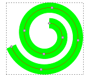 |
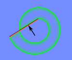 |
A spiral path becomes a polygon. Its ends are joined automatically, as shown by the red line. |
| Spiral (stroke to path) | 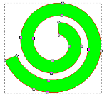 |
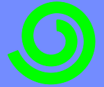 |
To preserve the outline of a spiral, select it and choose Path → Stroke to Path (Ctrl+Alt+C). |
| Text | Text objects are unsupported. | ||
| Text converted to a path | 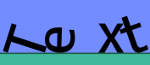 |
To export text as polygons, select the text and choose Path → Object to Path (Shift+Ctrl+C). | |
| 3D box | 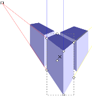 |
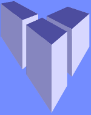 |
The images show a drawing made with the 3D box tool and its exported shape. |
| Plane | 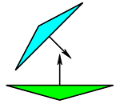 |
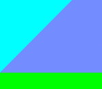 |
An SVG polyline becomes a plane. You can copy the plane from example.svg. |
| Spring | 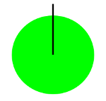 |
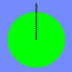 |
A two-point path becomes a spring with a damping factor of 0.1. Adjust the damping as needed. A path with three or more vertices becomes a polygon even when it looks like a line segment. |
| Hinge | 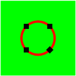 |
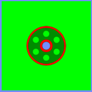 |
A circle with a middle marker (marker-mid) becomes a hinge, regardless of the marker shape. |
| Motor | 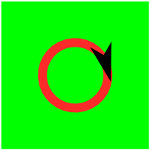 |
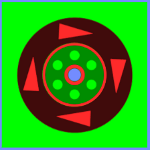 |
A circle with a start marker (marker-start) becomes a motor. The marker shape does not affect the conversion. Use a marker named “~start” to match the marker and motor directions in Inkscape, or copy the example from example.svg. A motor is a kind of hinge and only needs the start marker. |
| Tracer | 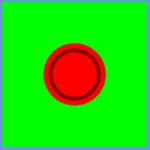 |
A circle with a filter attribute becomes a tracer. Any filter works, including blur. |
|
| Laser pen | 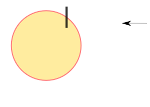 |
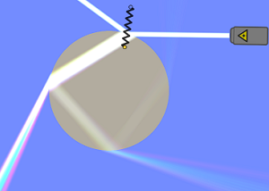 |
A segment with an end marker (marker-end) becomes a laser pen. The marker shape does not matter. |
| Thruster | 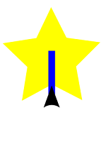 |
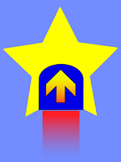 |
A segment with a start marker (marker-start) becomes a thruster. The marker shape does not matter. |
Disclaimer
This extension was tested with Inkscape 1.0.0. The ZIP archive includes the source files.
The software is provided without warranty. Use it at your own risk.